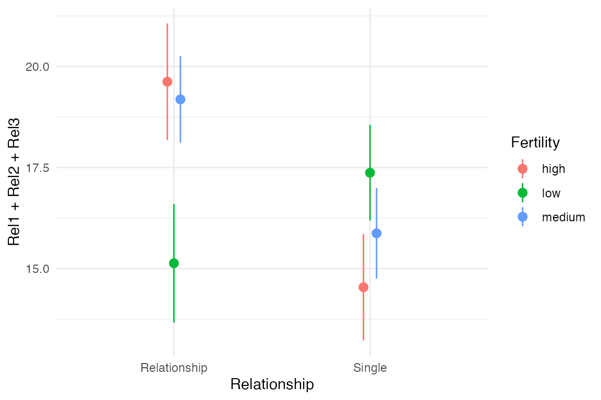

Example multiverse implementation: Effect of fertility on religiosity and political attitudes
Abhraneel Sarma, Northwestern University
2024-09-18
Source:vignettes/example-durante.Rmd
example-durante.RmdMultiverse case study #1
In this document, we outline an initial approach to conducting a multiverse analysis in R. We will show how our package can be used to perform the multiverse analysis outlined by Steegen et al. in Increasing Transparency Through a Multiverse Analysis.
Introduction
Data analysis can involve several decisions involving two or more options. In most statistical analysis, these decisions are taken by the researcher based on some reasonable justification. However, for several decisions, there can be more than one reasonable options to choose from. A multiverse analysis is a form of analysis which makes all such decisions explicit and conducts the complete analysis for all combinations of options (of each decision).
Below, we illustrate an example of a single analysis for a dataset. And then extend it to a multiverse analysis.
The data
The first step is to read the raw data from the file and store it as
a tibble. We will be following the tidy data format
here. The data is stored in two text files, and we can use
readr to read the files into R. In this example, we will
use the data collected by Durante et al. in The fluctuating female
vote: Politics, religion, and the ovulatory cycle, which
investigated the effect of fertility on religiosity and political
attitudes. We will focus on their second study (which we store in
data.raw.study2).
data("durante")
data.raw.study2 <- durante |>
mutate(
Abortion = abs(7 - Abortion) + 1,
StemCell = abs(7 - StemCell) + 1,
Marijuana = abs(7 - Marijuana) + 1,
RichTax = abs(7 - RichTax) + 1,
StLiving = abs(7 - StLiving) + 1,
Profit = abs(7 - Profit) + 1,
FiscConsComp = FreeMarket + PrivSocialSec + RichTax + StLiving + Profit,
SocConsComp = Marriage + RestrictAbortion + Abortion + StemCell + Marijuana
)The data look like this:
data.raw.study2 |>
head(10)## # A tibble: 10 × 26
## WorkerID Rel1 Rel2 Rel3 Abortion Marriage StemCell RestrictAbortion
## <dbl> <dbl> <dbl> <dbl> <dbl> <dbl> <dbl> <dbl>
## 1 1 8 8 7 6 7 1 7
## 2 2 8 7 7 1 2 3 1
## 3 3 6 6 2 5 1 2 4
## 4 4 7 8 6 1 5 2 2
## 5 5 7 7 9 1 1 4 1
## 6 6 9 9 9 7 7 2 7
## 7 7 5 8 5 3 4 3 5
## 8 8 1 1 1 1 1 2 1
## 9 9 7 7 7 5 1 2 1
## 10 10 6 6 6 3 5 3 1
## # ℹ 18 more variables: Marijuana <dbl>, FreeMarket <dbl>, RichTax <dbl>,
## # StLiving <dbl>, Profit <dbl>, PrivSocialSec <dbl>, Sure1 <dbl>,
## # Sure2 <dbl>, Relationship <dbl>, ReportedCycleLength <dbl>, Vote <dbl>,
## # Donate <dbl>, DateTesting <date>, StartDateofLastPeriod <date>,
## # StartDateofPeriodBeforeLast <date>, StartDateNext <date>,
## # FiscConsComp <dbl>, SocConsComp <dbl>The original paper looked at the relationship between fertility, relationship status, and religiosity. But there are many reasonable ways to have defined each of these three variables from this dataset, so it is a good candidate for multiverse analysis.
A single data set analysis: one possible analysis among many
The data collected needs to be processed before it can be modeled. Preparing the data set for analysis can involve several steps and decisions regarding how to encode the different raw values. The following is one example of data processing that can be performed for this study.
one_universe = data.raw.study2 |>
mutate( ComputedCycleLength = StartDateofLastPeriod - StartDateofPeriodBeforeLast ) |>
mutate( NextMenstrualOnset = StartDateofLastPeriod + ComputedCycleLength ) |>
mutate(
CycleDay = 28 - (NextMenstrualOnset - DateTesting),
CycleDay = ifelse(WorkerID == 15, 11, ifelse(WorkerID == 16, 18, CycleDay)),
CycleDay = ifelse(CycleDay > 1 & CycleDay < 28, CycleDay, ifelse(CycleDay < 1, 1, 28))
) |>
mutate(
Relationship = factor(ifelse(Relationship==1 | Relationship==2, "Single", "Relationship"))
) |>
filter( ComputedCycleLength > 25 & ComputedCycleLength < 35) |>
filter( Sure1 > 6 | Sure2 > 6 ) |>
mutate( Fertility = factor( ifelse(CycleDay >= 7 & CycleDay <= 14, "high", ifelse(CycleDay >= 17 & CycleDay <= 25, "low", "medium")) ) )The transformed data for this one universe looks like this:
one_universe |>
select( NextMenstrualOnset, Relationship, Sure1, Sure2, Fertility, everything() ) |>
head(10)## # A tibble: 10 × 30
## NextMenstrualOnset Relationship Sure1 Sure2 Fertility WorkerID Rel1 Rel2
## <date> <fct> <dbl> <dbl> <fct> <dbl> <dbl> <dbl>
## 1 2012-06-17 Relationship 9 9 medium 1 8 8
## 2 2012-05-28 Relationship 9 7 low 2 8 7
## 3 2012-05-31 Relationship 8 7 low 3 6 6
## 4 2012-05-23 Single 8 8 medium 6 9 9
## 5 2012-05-31 Relationship 9 9 low 7 5 8
## 6 2012-06-15 Single 8 8 medium 11 2 5
## 7 2012-06-08 Relationship 9 8 high 12 7 7
## 8 2012-06-14 Relationship 9 8 medium 13 9 9
## 9 2012-06-10 Relationship 9 9 high 17 6 4
## 10 2012-06-18 Single 9 9 medium 18 9 9
## # ℹ 22 more variables: Rel3 <dbl>, Abortion <dbl>, Marriage <dbl>,
## # StemCell <dbl>, RestrictAbortion <dbl>, Marijuana <dbl>, FreeMarket <dbl>,
## # RichTax <dbl>, StLiving <dbl>, Profit <dbl>, PrivSocialSec <dbl>,
## # ReportedCycleLength <dbl>, Vote <dbl>, Donate <dbl>, DateTesting <date>,
## # StartDateofLastPeriod <date>, StartDateofPeriodBeforeLast <date>,
## # StartDateNext <date>, FiscConsComp <dbl>, SocConsComp <dbl>,
## # ComputedCycleLength <drtn>, CycleDay <dbl>
one_universe |>
ggplot(aes(x = Relationship, y = Rel1 + Rel2 + Rel3, color = Fertility)) +
stat_summary(position = position_dodge(width = .1), fun.data = "mean_se") +
theme_minimal()
However, there also exists other valid processing options: instead of
calculating
NextMenstrualOnset = StartDateofLastPeriod + ComputedCycleLength,
it can also be calculated as
StartDateofLastPeriod + ReportedCycleLength. Such alternate
processing options can exist for several decisions that a researcher
makes in the data processing, analysis and presentation stages. This can
thus result in a multiverse of analysis, with the one described
above representing a single universe.
Below, we describe how our package allows you to conduct a multiverse analysis with ease.
Multiverse implementation
multiverse provides flexible functions which can be used
to perform a multiverse analysis.
The first step is to define a new multiverse. We will use the multiverse object to create a set of universes, each representing a different way of analysing our data.
M <- multiverse()The next step is to define our possible analyses inside the
multiverse. The multiverse package includes functions that
aim to make it easy to write multiverse analyses in as close a way to a
single universe analysis as possible (as seen in the single analysis
shown above).
Consider these first few lines from the transformation code in the single analysis above:
df <- data.raw.study2 |>
mutate(ComputedCycleLength = StartDateofLastPeriod - StartDateofPeriodBeforeLast) |>
mutate(NextMenstrualOnset = StartDateofLastPeriod + ComputedCycleLength)But NextMenstrualOnset could be calculated in at least
two other reasonable ways:
NextMenstrualOnset = StartDateofLastPeriod + ReportedCycleLengthNextMenstrualOnset = StartDateNext
To create a multiverse that includes these three possible processing
options, we can use the branch() function. The
branch() function defines a parameter (here
menstrual_calculation) and the different options
that the parameter can take (here, "mc_option1",
"mc_option2", "mc_option3"). Each option
corresponds to a different chunk of code that would be executed in a
different universe.
NextMenstrualOnset = branch(menstrual_calculation,
"mc_option1" ~ StartDateofLastPeriod + ComputedCycleLength,
"mc_option2" ~ StartDateofLastPeriod + ReportedCycleLength,
"mc_option3" ~ StartDateNext
)The branch() function indicates that, in our
multiverse, NextMenstrualOnset can take either of the three options
(here, "mc_option1", "mc_option2",
"mc_option3"). Thus, we need to declare this data
processing step inside the multiverse. We do this by using the
inside() function. The inside() function takes
in two arguments: 1. the multiverse object, M; and 2. the code for the
analysis (including branches). Note that if you are passing multiple
expressions, they should be enclosed within {}.
# here we just create the variable `df` in the multiverse
inside(M, df <- data.raw.study2)
# here, we perform two `mutate` operations in the multiverse.
# although they could have been chained, this illustrates
# how multiple variables can be declared together using the `{}`
inside(M, {
df <- df |>
mutate( ComputedCycleLength = StartDateofLastPeriod - StartDateofPeriodBeforeLast )
df <- df |>
mutate( NextMenstrualOnset = branch(menstrual_calculation,
"mc_option1" ~ StartDateofLastPeriod + ComputedCycleLength,
"mc_option2" ~ StartDateofLastPeriod + ReportedCycleLength,
"mc_option3" ~ StartDateNext)
)
})Note
In this vignette, we make use of the function which is more suited
for a script-style implementation. Keeping consistency with the
interactive programming interface of RStudio, we also offer the user multiverse
code chunks, a custom engine designed to work with the
multiverse package, to implement the multiverse analyses. multiverse
code chunks can be used instead of the r code
block to write code inside a multiverse object. See or refer to the
vignette (vignette("multiverse-in-rmd")) for more details
on using the multiverse with RMarkdown.
The multiverse, with declared code and branches
Once you add the code to the multiverse, it automatically parses the
code to identify the parameters and the corresponding
options that have been defined for each parameter.
Once the code has been added, the multiverse object will
have the following attributes:
-
parameters, which is a list of parameters
parameters(M)## $menstrual_calculation
## $menstrual_calculation[[1]]
## [1] "mc_option1"
##
## $menstrual_calculation[[2]]
## [1] "mc_option2"
##
## $menstrual_calculation[[3]]
## [1] "mc_option3"-
conditions, which is a list of conditions (we’ll define this later) -
expand, which is a tibble consisting of all possible combination of values for the multiverse
expand(M)## # A tibble: 3 × 6
## .universe menstrual_calculation .parameter_assignment .code .results
## <int> <chr> <list> <list> <list>
## 1 1 mc_option1 <named list [1]> <named list> <env>
## 2 2 mc_option2 <named list [1]> <named list> <env>
## 3 3 mc_option3 <named list [1]> <named list> <env>
## # ℹ 1 more variable: .errors <list>-
code, which is the code that the user passes to the multiverse to conduct a multiverse analysis. However, we do not execute this code and it is stored unevaluated. The user can interactively edit and rewrite this code, and can execute it for the current analysis or the entire multiverse using dedicated functions.
code(M)## [[1]]
## df <- data.raw.study2
##
## [[2]]
## df <- mutate(df,
## ComputedCycleLength = StartDateofLastPeriod - StartDateofPeriodBeforeLast
## )
##
## [[3]]
## df <- mutate(df,
## NextMenstrualOnset = branch(
## menstrual_calculation,
## "mc_option1" ~ StartDateofLastPeriod + ComputedCycleLength,
## "mc_option2" ~ StartDateofLastPeriod + ReportedCycleLength,
## "mc_option3" ~ StartDateNext
## )
## )Running a single analysis from the multiverse
At this point, we have defined three possible processing options
(three universes) in our multiverse. Although we don’t execute all the
universes in the multiverses once they are defined, we do run the
default analysis (i.e. the first row in the multiverse table). We can
extract objects from the default analysis using the $
operator.
M$df## # A tibble: 502 × 28
## WorkerID Rel1 Rel2 Rel3 Abortion Marriage StemCell RestrictAbortion
## <dbl> <dbl> <dbl> <dbl> <dbl> <dbl> <dbl> <dbl>
## 1 1 8 8 7 6 7 1 7
## 2 2 8 7 7 1 2 3 1
## 3 3 6 6 2 5 1 2 4
## 4 4 7 8 6 1 5 2 2
## 5 5 7 7 9 1 1 4 1
## 6 6 9 9 9 7 7 2 7
## 7 7 5 8 5 3 4 3 5
## 8 8 1 1 1 1 1 2 1
## 9 9 7 7 7 5 1 2 1
## 10 10 6 6 6 3 5 3 1
## # ℹ 492 more rows
## # ℹ 20 more variables: Marijuana <dbl>, FreeMarket <dbl>, RichTax <dbl>,
## # StLiving <dbl>, Profit <dbl>, PrivSocialSec <dbl>, Sure1 <dbl>,
## # Sure2 <dbl>, Relationship <dbl>, ReportedCycleLength <dbl>, Vote <dbl>,
## # Donate <dbl>, DateTesting <date>, StartDateofLastPeriod <date>,
## # StartDateofPeriodBeforeLast <date>, StartDateNext <date>,
## # FiscConsComp <dbl>, SocConsComp <dbl>, ComputedCycleLength <drtn>, …A multiverse with all possible combinations specified
Besides calculating the onset of the next menstruation cycle, there
are other variables which have multiple valid and reasonable processing
options. These include defining Relationship and
Fertility, and exclusion criteria based on the values for
cycle length and certainty of responses. The next code chunk illustrates
how this can be added to the multiverse object defined above.
inside(M, {
df <- df |>
mutate(RelationshipStatus = branch( relationship_status,
"rs_option1" ~ factor(ifelse(Relationship==1 | Relationship==2, 'Single', 'Relationship')),
"rs_option2" ~ factor(ifelse(Relationship==1, 'Single', 'Relationship')),
"rs_option3" ~ factor(ifelse(Relationship==1, 'Single', ifelse(Relationship==3 | Relationship==4, 'Relationship', NA))) )
) |>
mutate(
CycleDay = 28 - (NextMenstrualOnset - DateTesting),
CycleDay = ifelse(WorkerID == 15, 11, ifelse(WorkerID == 16, 18, CycleDay)),
CycleDay = ifelse(CycleDay > 1 & CycleDay < 28, CycleDay, ifelse(CycleDay < 1, 1, 28))
) |>
filter( branch(cycle_length,
"cl_option1" ~ TRUE,
"cl_option2" ~ ComputedCycleLength > 25 & ComputedCycleLength < 35,
"cl_option3" ~ ReportedCycleLength > 25 & ReportedCycleLength < 35
)) |>
filter( branch(certainty,
"cer_option1" ~ TRUE,
"cer_option2" ~ Sure1 > 6 | Sure2 > 6
)) |>
mutate( Fertility = branch( fertile,
"fer_option1" ~ factor( ifelse(CycleDay >= 7 & CycleDay <= 14, "high", ifelse(CycleDay >= 17 & CycleDay <= 25, "low", "medium")) ),
"fer_option2" ~ factor( ifelse(CycleDay >= 6 & CycleDay <= 14, "high", ifelse(CycleDay >= 17 & CycleDay <= 27, "low", "medium")) ),
"fer_option3" ~ factor( ifelse(CycleDay >= 9 & CycleDay <= 17, "high", ifelse(CycleDay >= 18 & CycleDay <= 25, "low", "medium")) ),
"fer_option4" ~ factor( ifelse(CycleDay >= 8 & CycleDay <= 14, "high", "low") ),
"fer_option5" ~ factor( ifelse(CycleDay >= 8 & CycleDay <= 17, "high", "low") )
))
})Since the multiverse object has already been created and the one parameter has already been defined, the inside function will add to the previous code.
code(M)## [[1]]
## df <- data.raw.study2
##
## [[2]]
## df <- mutate(df,
## ComputedCycleLength = StartDateofLastPeriod - StartDateofPeriodBeforeLast
## )
##
## [[3]]
## df <- mutate(df,
## NextMenstrualOnset = branch(
## menstrual_calculation,
## "mc_option1" ~ StartDateofLastPeriod + ComputedCycleLength,
## "mc_option2" ~ StartDateofLastPeriod + ReportedCycleLength,
## "mc_option3" ~ StartDateNext
## )
## )
##
## [[4]]
## df <- mutate(
## filter(
## filter(
## mutate(
## mutate(df,
## RelationshipStatus = branch(
## relationship_status,
## "rs_option1" ~ factor(ifelse(Relationship == 1 | Relationship == 2, "Single", "Relationship")),
## "rs_option2" ~ factor(ifelse(Relationship == 1, "Single", "Relationship")),
## "rs_option3" ~ factor(ifelse(Relationship == 1,
## "Single",
## ifelse(Relationship == 3 | Relationship == 4, "Relationship", NA)
## ))
## )
## ),
## CycleDay = 28 - (NextMenstrualOnset - DateTesting),
## CycleDay = ifelse(WorkerID == 15, 11, ifelse(WorkerID == 16, 18, CycleDay)),
## CycleDay = ifelse(CycleDay > 1 & CycleDay < 28, CycleDay, ifelse(CycleDay < 1, 1, 28))
## ),
## branch(
## cycle_length,
## "cl_option1" ~ TRUE,
## "cl_option2" ~ ComputedCycleLength > 25 & ComputedCycleLength < 35,
## "cl_option3" ~ ReportedCycleLength > 25 & ReportedCycleLength < 35
## )
## ),
## branch(
## certainty,
## "cer_option1" ~ TRUE,
## "cer_option2" ~ Sure1 > 6 | Sure2 > 6
## )
## ),
## Fertility = branch(
## fertile,
## "fer_option1" ~ factor(ifelse(CycleDay >= 7 & CycleDay <= 14,
## "high",
## ifelse(CycleDay >= 17 & CycleDay <= 25, "low", "medium")
## )),
## "fer_option2" ~ factor(ifelse(CycleDay >= 6 & CycleDay <= 14,
## "high",
## ifelse(CycleDay >= 17 & CycleDay <= 27, "low", "medium")
## )),
## "fer_option3" ~ factor(ifelse(CycleDay >= 9 & CycleDay <= 17,
## "high",
## ifelse(CycleDay >= 18 & CycleDay <= 25, "low", "medium")
## )),
## "fer_option4" ~ factor(ifelse(CycleDay >= 8 & CycleDay <= 14, "high", "low")),
## "fer_option5" ~ factor(ifelse(CycleDay >= 8 & CycleDay <= 17, "high", "low"))
## )
## )The expand will contain all the possible combinations of
the parameter options that have been identified.
## # A tibble: 6 × 10
## .universe menstrual_calculation relationship_status cycle_length certainty
## <int> <chr> <chr> <chr> <chr>
## 1 1 mc_option1 rs_option1 cl_option1 cer_option1
## 2 2 mc_option1 rs_option1 cl_option1 cer_option1
## 3 3 mc_option1 rs_option1 cl_option1 cer_option1
## 4 4 mc_option1 rs_option1 cl_option1 cer_option1
## 5 5 mc_option1 rs_option1 cl_option1 cer_option1
## 6 6 mc_option1 rs_option1 cl_option1 cer_option2
## # ℹ 5 more variables: fertile <chr>, .parameter_assignment <list>,
## # .code <list>, .results <list>, .errors <list>In our multiverse we have identified 5 options for calculating
fertility, 3 options for calculating
menstrual calculation and relationship status
each, 3 wyas of excluding participants based on their
cycle length and 2 ways of excluding participants based on
the self-reported certainty of their responses.
This results in $ 5 = 270$ possible combinations.
## [1] 270We can then inspect the default analysis the default single universe analysis from this multiverse:
M$df |>
head()## # A tibble: 6 × 31
## WorkerID Rel1 Rel2 Rel3 Abortion Marriage StemCell RestrictAbortion
## <dbl> <dbl> <dbl> <dbl> <dbl> <dbl> <dbl> <dbl>
## 1 1 8 8 7 6 7 1 7
## 2 2 8 7 7 1 2 3 1
## 3 3 6 6 2 5 1 2 4
## 4 4 7 8 6 1 5 2 2
## 5 5 7 7 9 1 1 4 1
## 6 6 9 9 9 7 7 2 7
## # ℹ 23 more variables: Marijuana <dbl>, FreeMarket <dbl>, RichTax <dbl>,
## # StLiving <dbl>, Profit <dbl>, PrivSocialSec <dbl>, Sure1 <dbl>,
## # Sure2 <dbl>, Relationship <dbl>, ReportedCycleLength <dbl>, Vote <dbl>,
## # Donate <dbl>, DateTesting <date>, StartDateofLastPeriod <date>,
## # StartDateofPeriodBeforeLast <date>, StartDateNext <date>,
## # FiscConsComp <dbl>, SocConsComp <dbl>, ComputedCycleLength <drtn>,
## # NextMenstrualOnset <date>, RelationshipStatus <fct>, CycleDay <dbl>, …Specifying conditions in the multiverse analysis
In a multiverse analysis, it may occur that the value of one variable
might depend on the value of another variable defined previously. For
example, in our example, depending on how we filter participants based
on cycle length, we can only the corresponding value for
calculating participants’ NextMenstrualOnset. In other
words, if we are using ComputedCycleLength to exclude
participants, this means that we should not calculate the variable
NextMenstrualOnset (date for the onset of the next
menstrual cycle) using the ReportedCycleLength value.
Similarly, if we are using ReportedCycleLength to exclude
participants it is inconsistent to calculate
NextMenstrualOnset using
ComputedCycleLength.
We can express these conditionals in the multiverse (See vignette(“Conditions”) for more details). Below, we use the %when% operator:
df <- data.raw.study2 |>
mutate( ComputedCycleLength = StartDateofLastPeriod - StartDateofPeriodBeforeLast ) |>
mutate(NextMenstrualOnset = branch(menstrual_calculation,
"mc_option1" ~ (StartDateofLastPeriod + ComputedCycleLength) %when% (cycle_length != "cl_option3"),
"mc_option2" ~ (StartDateofLastPeriod + ReportedCycleLength) %when% (cycle_length != "cl_option2"),
"mc_option3" ~ StartDateNext)
)Putting it all together
Specifying these conditions allows us to exclude inconsistent combinations from our analyses. Let’s update our example by including these conditions:
M = multiverse()
inside(M, {
df <- data.raw.study2 |>
mutate( ComputedCycleLength = StartDateofLastPeriod - StartDateofPeriodBeforeLast ) |>
dplyr::filter( branch(cycle_length,
"cl_option1" ~ TRUE,
"cl_option2" ~ ComputedCycleLength > 25 & ComputedCycleLength < 35,
"cl_option3" ~ ReportedCycleLength > 25 & ReportedCycleLength < 35
)) |>
dplyr::filter( branch(certainty,
"cer_option1" ~ TRUE,
"cer_option2" ~ Sure1 > 6 | Sure2 > 6
)) |>
mutate(NextMenstrualOnset = branch(menstrual_calculation,
"mc_option1" %when% (cycle_length != "cl_option3") ~ StartDateofLastPeriod + ComputedCycleLength,
"mc_option2" %when% (cycle_length != "cl_option2") ~ StartDateofLastPeriod + ReportedCycleLength,
"mc_option3" ~ StartDateNext)
) |>
mutate(
CycleDay = 28 - (NextMenstrualOnset - DateTesting),
CycleDay = ifelse(WorkerID == 15, 11, ifelse(WorkerID == 16, 18, CycleDay)),
CycleDay = ifelse(CycleDay > 1 & CycleDay < 28, CycleDay, ifelse(CycleDay < 1, 1, 28))
) |>
mutate( Fertility = branch( fertile,
"fer_option1" ~ factor( ifelse(CycleDay >= 7 & CycleDay <= 14, "high", ifelse(CycleDay >= 17 & CycleDay <= 25, "low", NA)) ),
"fer_option2" ~ factor( ifelse(CycleDay >= 6 & CycleDay <= 14, "high", ifelse(CycleDay >= 17 & CycleDay <= 27, "low", NA)) ),
"fer_option3" ~ factor( ifelse(CycleDay >= 9 & CycleDay <= 17, "high", ifelse(CycleDay >= 18 & CycleDay <= 25, "low", NA)) ),
"fer_option4" ~ factor( ifelse(CycleDay >= 8 & CycleDay <= 14, "high", "low") ),
"fer_option5" ~ factor( ifelse(CycleDay >= 8 & CycleDay <= 17, "high", "low") )
)) |>
mutate(RelationshipStatus = branch(relationship_status,
"rs_option1" ~ factor(ifelse(Relationship==1 | Relationship==2, 'Single', 'Relationship')),
"rs_option2" ~ factor(ifelse(Relationship==1, 'Single', 'Relationship')),
"rs_option3" ~ factor(ifelse(Relationship==1, 'Single', ifelse(Relationship==3 | Relationship==4, 'Relationship', NA))) )
)
})After excluding the inconsistent choice combinations, choice combinations remain:
## [1] 210Now, we’ve created the complete multiverse that was presented as example #2 from Steegen et al.’s paper.
Modeling
Steegen et al. create 6 models. The first model uses data from example #1. The other five models use the data from example #2, which we’ve using so far.
Model #2: Effect of Fertility and Relationship status on Religiosity
The authors compute a composite score of Religiosity by calculating the average of the three Religiosity items.
The authors perform an ANOVA to study the effect of
Fertility, Relationship and their interaction term, on
the composite Religiosity score. We fit the linear model using the call:
lm( RelComp ~ Fertility * RelationshipStatus, data = df )
inside our multiverse and save the result to a variable called
fit_RelComp.
To extract the results from the analysis, we first create a tidy
data-frame of the results of the model, using broom::tidy.
Recall that declaring a variable in the multiverse only executes it in
the default universe, and hence we need to call
execute_multiverse() to execute our analysis in each
multiverse.
inside(M, {
summary_RelComp <- fit_RelComp |>
broom::tidy( conf.int = TRUE )
})
execute_multiverse(M)Now that we have performed the analysis in each universe of the
multiverse, we need to plot the data. To plot the data, we need to
extract the relevant result data-frame from each universe into a single
data-frame. The following code does this, by extracting the variable
where the estimates of the model are stored,
summary_RelComp and creating a single tidy data-frame that
can be accessed easily.
expand(M) |>
extract_variables(summary_RelComp) |>
unnest( cols = c(summary_RelComp) ) |>
head( 10 )## # A tibble: 10 × 17
## .universe cycle_length certainty menstrual_calculation fertile
## <int> <chr> <chr> <chr> <chr>
## 1 1 cl_option1 cer_option1 mc_option1 fer_option1
## 2 1 cl_option1 cer_option1 mc_option1 fer_option1
## 3 1 cl_option1 cer_option1 mc_option1 fer_option1
## 4 1 cl_option1 cer_option1 mc_option1 fer_option1
## 5 2 cl_option1 cer_option1 mc_option1 fer_option1
## 6 2 cl_option1 cer_option1 mc_option1 fer_option1
## 7 2 cl_option1 cer_option1 mc_option1 fer_option1
## 8 2 cl_option1 cer_option1 mc_option1 fer_option1
## 9 3 cl_option1 cer_option1 mc_option1 fer_option1
## 10 3 cl_option1 cer_option1 mc_option1 fer_option1
## # ℹ 12 more variables: relationship_status <chr>, .parameter_assignment <list>,
## # .code <list>, .results <list>, .errors <list>, term <chr>, estimate <dbl>,
## # std.error <dbl>, statistic <dbl>, p.value <dbl>, conf.low <dbl>,
## # conf.high <dbl>We then take this data frame and plot the results as a confidence
interval and point estimate using ggplot2. As you can see,
this is similar to how you would plot a point estimate and confidence
intervals for a regular analysis. We then use gganimate to
animate through the results of each universe to quickly get an overview
of the robustness of the results.
Note: we discuss extracting results from the multiverse and
visualising them in more detail in
vignette(visualising-multiverse)
p <- expand(M) |>
extract_variables(summary_RelComp) |>
unnest( cols = c(summary_RelComp) ) |>
mutate( term = recode( term,
"RelationshipStatusSingle" = "Single",
"Fertilitylow:RelationshipStatusSingle" = "Single:Fertility_low"
) ) |>
filter( term != "(Intercept)" ) |>
ggplot() +
geom_vline( xintercept = 0, colour = '#979797' ) +
geom_point( aes(x = estimate, y = term)) +
geom_errorbarh( aes(xmin = conf.low, xmax = conf.high, y = term), height = 0) +
theme_minimal() +
transition_manual( .universe )
animate(p, nframes = 210, fps = 4, res = 72)